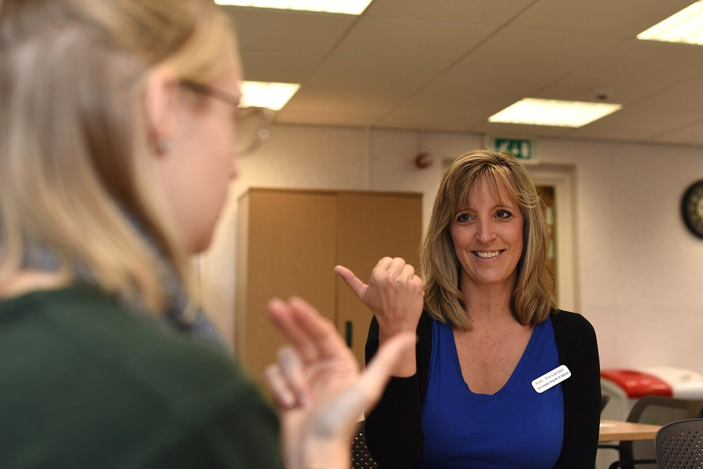

Lecture 11 — Gender, Identity & Disability
Part B: Disability, Identity, and the Limits of Autonomy
1 A Prediction You’re About to Get Wrong
1.1 A Case to Sit With
You are the nurse admitting Daniel, 34, who broke his neck in a diving accident four years ago. He is paralyzed from the chest down and uses a power wheelchair. On the intake form, under quality of life, 0–10, you have to record your clinical impression before you’ve really talked to him.
Picture his life. Then write a number.
- What number did you put, and what was it based on?
- When Daniel fills out the same scale himself an hour later, do you expect his number to be higher than yours, lower, or the same?
- If his is much higher, which of you is wrong?
1.2 After You’ve Discussed
Note
Most clinicians put a low number. Most patients like Daniel put a high one, and the gap is large and well documented (Gerhart et al. 1994).
The gap shows our predictions are off. It does not settle whether disability is bad in itself, or simply a different way of having a body. Those are two different claims, and they are easy to confuse.
1.3 Today
By the end of Part B, you will be able to:
- Distinguish the medical, social, and interactional models of disability, and explain the disability paradox and why it matters at the bedside.
- Lay out the mere-difference vs. bad-difference dispute, and apply it to selective abortion and to choosing a Deaf child.
- Evaluate the case for honoring a request to amputate a healthy limb, and test its analogy to gender dysphoria.
2 Three Ways to See a Disability
2.1 The Same Person, Three Lenses
Before we ask whether disability is bad, a prior question: where does the problem live? Three answers have shaped law, medicine, and activism.
| Model | Where the problem lives | The fix it points to | Its blind spot |
|---|---|---|---|
| Medical | in the body: a deficit to diagnose | cure or correct the person | the building and the bus never come up for review |
| Social | in the environment: barriers and design | change the world, not the body | some burdens (pain, fatigue) no ramp can fix |
| Interactional | in the meeting of body and world | both, weighed case by case | demands judgment; there is no formula |
The medical model is the frame of the chart and the care plan. The others ask what it leaves out.
2.2 Same Body, Two Buildings
The social model, forged by disabled activists in the 1970s, splits impairment (a feature of your body: you can’t walk) from disability (what a society does with that feature: it builds only stairs).
The wheelchair didn’t change between the two rows. The building did.
Curb cuts, won by wheelchair users, now serve strollers, suitcases, and bad knees. Ezekielf, via Wikimedia Commons. CC0 1.0.
2.3 Shakespeare’s “Both” Position
The pure social model overreaches, and Tom Shakespeare says so from inside the disability movement (Shakespeare 2006). Build every ramp in the world, and a degenerative condition still brings pain and fatigue that no ramp touches.
- His interactional model: disability is real, and it is relational, produced where a particular body meets a particular world.
- Some of the burden is social and removable (the stairs). Some is intrinsic and stays (the pain).
- The honest question is never “body or world?” but how much of this burden is which, and the answer changes case by case.
3 The Disability Paradox
3.1 What Patients Report
In 1999, Gary Albrecht and Patrick Devlieger interviewed 153 people with disabilities. More than half (54%) of those with moderate to serious disabilities reported good or excellent quality of life, while outsiders, including health professionals, predicted the opposite (Albrecht and Devlieger 1999).
- It is only a “paradox” from the outside, where people imagine the disability but not the life around it.
- Explanations include adaptation (people adjust), response shift (what counts as a good day rescales), and the relationships, work, and meaning a diagnosis never mentions.
- At the bedside, it is a patient-safety issue: a low prediction made early can steer counseling and even resuscitation decisions.
3.2 What the Paradox Does and Doesn’t Show
What it shows
Your quality-of-life predictions about disabled patients are systematically miscalibrated. Ask; don’t assume.
What it doesn’t show
That disability is no loss at all. Critics argue adaptation can mask real deprivation: a person can rescale “a good day” and report contentment while still being worse off on things that matter.
So the paradox unsettles the bedside, but it does not settle the philosophy. That is the next question.
4 Is Disability Bad in Itself?
4.1 Mere Difference or Bad Difference?
The question the rest of the lecture orbits: is disability bad in itself, or only bad because of how the world is arranged?
Mere difference
Elizabeth Barnes: disability is a difference, like being gay or left-handed, not in itself a harm (Barnes 2016). Its burdens are largely social, and it can carry goods: community, perspective, skills.
Bad difference
Greg Bognar and others: disability is, on balance, a real bad that we have reason to prevent, even in a perfectly just society (Bognar 2016). A just world removes the stairs, not the condition.
Both sides accept the paradox data. They disagree about what it shows.
4.2 The Commitments Map
We’ll track the two views across three hard cases. Each cell will record what a view would say, not which view wins, so you can see what holding a view consistently costs you.
| Case | Mere difference would say… | Bad difference would say… |
|---|---|---|
| Selective abortion after prenatal testing | ? | ? |
| Choosing a Deaf embryo | ? | ? |
| Amputating a healthy limb on request | ? | ? |
4.3 The Expressivist Objection
Prenatal screening lets parents test for conditions like Down syndrome and end the pregnancy. Adrienne Asch, a bioethicist who was herself blind, pressed the expressivist objection: selecting against a trait says something about people who live with it (Asch 1999).
What she did not argue
Asch did not argue for banning abortion, or against reproductive choice. Her target was the framing: testing offered as routine, with disability described only as a list of deficits.
What she demanded
If you offer the test, offer an honest picture of the life, not just the diagnosis: what a day with Down syndrome is actually like, from people who live it.
4.4 The Objection in Standard Form
The Expressivist Objection
After Adrienne Asch, “Prenatal Diagnosis and Selective Abortion” (1999)
- Selecting against a trait, because of that trait, acts on the judgment that it makes a life go worse.
- Doing that publicly, through medicine, sends a message about everyone who already lives with the trait.
- Disability does not make a life go worse in the way that message assumes.
- So routine selective abortion for disability sends a false and harmful message about disabled people.
The replies
- Declining this pregnancy need not be a verdict on existing people.
- It is the surrounding attitudes, not the bare choice, that carry a message.
Everything rides on premise 3. If disability is a bad difference, the “message” may be true rather than a slander.
4.5 Choosing a Deaf Child
Some Deaf couples have sought to choose a Deaf embryo. Savulescu’s procreative beneficence says no (Savulescu 2001).
Against Selecting for Deafness
After Julian Savulescu, “Procreative Beneficence” (2001)
- Choosing among possible children, parents have reason to pick the one expected to have the best life.
- Other things equal, a hearing child has access to goods (spoken language, more careers) that a Deaf child lacks.
- So, other things equal, parents have reason not to select for Deafness.
Note
The mere-difference reply attacks premise 2. Deafness opens a language and a community as much as it closes options. The lives aren’t ranked, just different.
4.6 Thought Question
A Deaf couple comes to your fertility clinic. Both are fluent in ASL and deeply embedded in the Deaf community, and they ask to select an embryo that will be Deaf, the same way another couple might hope for a child who shares their language.
You are on the clinic’s ethics committee.
- Is there something about you or your family (a language, a faith, a culture, a trait) that outsiders might count as a disadvantage, but that you would want your child to share?
- The committee has to vote. Do you allow it? Is selecting for Deafness morally different from selecting against it, or the same act in two directions?

An ASL interpreter teaches the basics, RAF Mildenhall, 2018. U.S. Air Force photo by Brandon Esau. Public domain.
4.7 After You’ve Discussed
Note
A distinction the cases never named: welfarist vs. perfectionist reasons. A welfarist asks only whether the child’s life goes well for the child. A perfectionist asks whether a capacity (hearing) is worth having in itself, however content its absence leaves you.
Most “select out but not in” policies quietly rely on a perfectionist premise (hearing is better, full stop) while presenting themselves as neutral. That doesn’t make the policy wrong. It locates its real commitment.
5 A Healthy Limb, and a Patient Who Wants It Gone
5.1 Body Integrity Dysphoria
Some people feel a persistent, distressing sense that a healthy limb is not theirs and should be removed. The WHO now classifies this as body integrity dysphoria (ICD-11). It pushes respect for autonomy to its edge.
Important
The Robert Smith case (Falkirk, Scotland, late 1990s)
Surgeon Robert Smith amputated the healthy legs of two patients who had sought the operation for years and reported relief afterward. When the cases became public, the hospital stopped the practice. Michael First’s later study of similar patients found the desire was stable, specific, and long-standing: not a delusion or a passing wish (First 2005).
When a competent adult calmly and persistently asks to remove a healthy part of their own body, what does respect for autonomy require?
5.2 What Autonomy Might Require
The Autonomy Argument for Amputation
After Tim Bayne and Neil Levy, “Amputees by Choice” (2005)
- A competent adult’s settled, informed request about their own body should normally be honored, even when others find it strange.
- The desire in body integrity dysphoria is competent, settled, and informed: stable for decades, not a delusion.
- Surgery reliably relieves the distress, and no other treatment reliably does.
- So refusing the amputation, not performing it, is what fails to respect the patient.
Pushback: premise 1 (removing healthy tissue may exceed a doctor’s role) and premise 3 (“nothing else works” is far from settled).
5.3 Thought Question
You sit on a hospital ethics board. A colleague argues: “Body integrity dysphoria and gender dysphoria have the same shape: distress at a bodily feature, a request to alter the body, relief when we do. If we accommodate one, consistency demands we treat them alike.”
Another colleague answers: “Same shape, different substance. The analogy is a rhetorical trap.”
- Think of a time someone told you “that’s just like…” about two things you felt were different. What made the comparison fair, or unfair?
- Which colleague do you side with? What is the best point the other one has?
5.4 After You’ve Discussed
Note
Whichever colleague you sided with, one distinction removes much of the heat: structural analogy vs. evidential analogy.
Two conditions can share a structure (distress, a request to alter the body, relief) while differing entirely in their evidence: how large the outcome studies are, how reversible the intervention is, how the diagnosis behaves over time. An argument that rides the structural likeness all the way to “treat them identically” has skipped the evidential question, which is the one doing the real work.
So the analogy isn’t simply true or false. It holds at the level of form and may break at the level of evidence.
6 Bringing It to the Bedside
6.1 The Paradox Has a Name in the Chart
The miscalibration from earlier has a clinical name: diagnostic overshadowing.
Diagnostic overshadowing
Blaming a patient’s new symptoms on their existing disability instead of investigating them as you would in anyone else. A patient with cerebral palsy reports chest pain, and it’s filed under “his baseline.” A patient with an intellectual disability grows withdrawn, and no one checks for depression or pain.
The countermeasure is a habit: ask whether you’d order this workup for a patient without the disability, and if so, order it.
6.2 The Access Gap Is Measurable
Disabled patients get worse care, and not mainly because of their bodies.
- Exam tables that don’t lower and scales that can’t weigh a wheelchair user mean basics like cancer screening happen less often.
- In a 2021 national survey of physicians, most believed disabled people have a worse quality of life, and fewer than half felt very confident they could give them equal care (Iezzoni et al. 2021).

6.3 How You Talk Is Part of the Care
Person-first or identity-first? “Person with a disability” puts the person first. “Disabled person” (and capital-D Deaf, Autistic) is claimed with pride by many. There’s no single correct form: ask, and use what the patient uses.
“Nothing about us without us.” The disability-rights slogan, translated for the bedside: speak to the patient, not the companion pushing the chair. Presume capacity. Ask what help they want before you give it.
Chona Kasinger for Disabled And Here. CC BY 4.0.
6.4 The Commitments Map, Filled
| Case | Mere difference would say… | Bad difference would say… |
|---|---|---|
| Selective abortion | screening framed as tragedy rests on a false premise | a real loss may be prevented, but the message still warrants care |
| Choosing a Deaf embryo | selecting for Deafness is coherent, like any valued trait | choosing a worse-off life for a child who can’t consent |
| Amputating a healthy limb | a settled identity claim deserving accommodation | distress to be treated, not a difference to affirm |
Read down a column: can either view hold up across all three cases? Read across a row: notice how much each verdict was fixed by a premise chosen early. The map decides nothing; it shows where the decision actually lives.
6.5 Wrap-Up
We began with a gap: clinicians predict low quality of life for disabled patients, and patients report high. That disability paradox unsettles the bedside but leaves open whether disability is a mere difference or a bad difference. We tracked that dispute across selective abortion, Deaf embryo selection, and body integrity dysphoria, and tested the analogy to gender dysphoria by mapping it rather than asserting it. The disagreements are about premises and evidence, not about who cares more.
6.6 Review Questions
Recall
State the medical, social, and interactional models of disability in one sentence each, and say where each locates “the problem.”
Apply
A hospital is designing a survey that asks nurses to rate incoming patients’ quality of life. Using the disability paradox, name one concrete way this could harm disabled patients, and one safeguard you’d build in.
Debate
Should a competent adult with body integrity dysphoria ever be able to obtain surgery to remove a healthy limb? Defend your answer using the autonomy argument and at least one objection to it.
6.7 Key Terms
- Medical / social / interactional model — disability located in the body / in the environment / where the two meet.
- Impairment vs. disability — a bodily feature vs. what a society does to people who have it.
- Disability paradox — disabled people report far higher quality of life than outsiders, including clinicians, predict.
- Mere vs. bad difference — not in itself a harm (Barnes) vs. a genuine bad worth preventing (Bognar).
- Expressivist objection — selecting against a disability sends a message about people who have it (Asch).
- Procreative beneficence — parents should choose the possible child expected to have the best life (Savulescu).
- Welfarist vs. perfectionist — good for the person vs. worth having in itself.
- Body integrity dysphoria — persistent distress that a healthy limb is not one’s own (ICD-11).
- Diagnostic overshadowing — blaming a disabled patient’s new symptoms on their existing disability.
6.8 Further Reading
- Barnes, Elizabeth. The Minority Body: A Theory of Disability. Oxford University Press, 2016.
- Shakespeare, Tom. Disability Rights and Wrongs Revisited. Routledge, 2014.
- Johnson, Harriet McBryde. “Unspeakable Conversations.” The New York Times Magazine, 2003. (The disability-rights case against Peter Singer, by a lawyer who met him.)
6.9 References
Albrecht, Gary L., and Patrick J. Devlieger. 1999. “The Disability Paradox: High Quality of Life Against All Odds.” Social Science & Medicine 48 (8): 977–88.
Asch, Adrienne. 1999. “Prenatal Diagnosis and Selective Abortion: A Challenge to Practice and Policy.” American Journal of Public Health 89 (11): 1649–57.
Barnes, Elizabeth. 2016. The Minority Body: A Theory of Disability. Oxford University Press.
Bognar, Greg. 2016. “Is Disability Mere Difference?” Journal of Medical Ethics 42 (1): 46–49.
First, Michael B. 2005. “Desire for Amputation of a Limb: Paraphilia, Psychosis, or a New Type of Identity Disorder.” Psychological Medicine 35 (6): 919–28.
Gerhart, K. A., J. Koziol-McLain, S. R. Lowenstein, and G. G. Whiteneck. 1994. “Quality of Life Following Spinal Cord Injury: Knowledge and Attitudes of Emergency Care Providers.” Annals of Emergency Medicine 23 (4): 807–12. https://doi.org/10.1016/s0196-0644(94)70318-3.
Iezzoni, Lisa I., Sowmya R. Rao, Julie Ressalam, et al. 2021. “Physicians’ Perceptions of People with Disability and Their Health Care.” Health Affairs 40 (2): 297–306.
Savulescu, Julian. 2001. “Procreative Beneficence: Why We Should Select the Best Children.” Bioethics 15 (5–6): 413–26. https://doi.org/10.1111/1467-8519.00251.
Shakespeare, Tom. 2006. Disability Rights and Wrongs. Routledge.